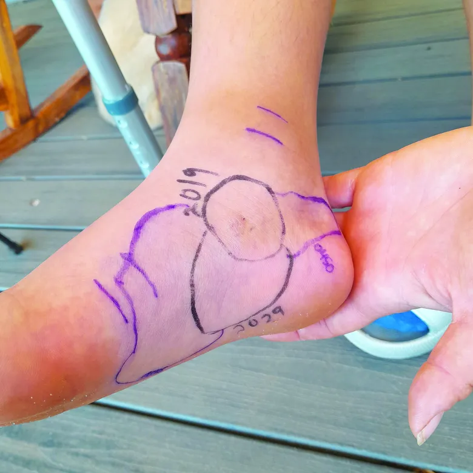

UA College of Pharmacy | Aug. 6, 2014
Arguably, snake season is year-round in Arizona, a state known for its rattlers. But baby rattlesnakes are born in July and August, making these two months especially dangerous for hikers, gardeners, children and others at high risk of exposure to rattlesnake bites.
